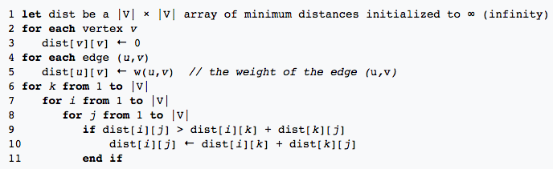
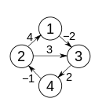
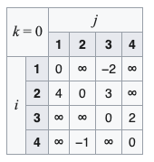
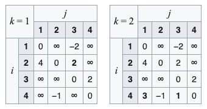
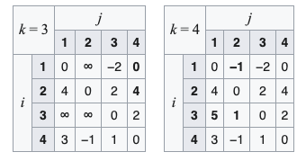

Algoritmo de Floyd–Warshall#
¿Qué es el algoritmo de Floyd–Warshall?
El algoritmo de Floyd–Warshall es un método clásico de análisis sobre grafos utilizado para encontrar los caminos mínimos en grafos ponderados.
Puede trabajar con pesos positivos o negativos, pero no admite ciclos con peso negativo.
Encuentra el camino más corto entre todos los pares de vértices en una única ejecución.
Es un ejemplo fundamental de programación dinámica aplicada a grafos.
¿Puede el algoritmo devolver los caminos mínimos completos?
El algoritmo original solo devuelve las distancias mínimas, no las secuencias exactas de vértices.
Sin embargo, con una pequeña modificación —manteniendo una matriz de predecesores — se pueden reconstruir los caminos completos.
¿Qué hace el algoritmo de Floyd–Warshall?
Compara todos los caminos posibles entre cada par de vértices del grafo.
Puede hacerlo en \(\Theta(|V|^3)\) comparaciones.
Mejora incrementalmente la estimación del camino más corto entre dos vértices, hasta alcanzar el valor óptimo.
Aunque el número de combinaciones posibles puede ser muy grande, el algoritmo logra resolverlo eficientemente gracias a la programación dinámica.
Formulación recursiva#
Sabemos que el menor camino de \(i\) a \(j\) usando solo vértices de \(\{1, 2, ..., k\}\) está dado por:
Si existiera un camino más corto pasando por \(k+1\), la longitud sería:
Por tanto, podemos definir la relación recursiva:
Casos especiales#
Caso base:
\[ menorCamino(i, j, 0) = w(i, j) \]donde \(w(i,j)\) es el peso de la arista \((i,j)\).
Caso recursivo:
El algoritmo se basa en la idea de mejorar progresivamente la estimación del camino más corto entre dos vértices \(i\) y \(j\), permitiendo cada vez el uso de un conjunto más grande de vértices intermedios. En el paso \(k+1\), consideramos si permitir usar el vértice \(k+1\) como punto intermedio produce un camino más corto entre \(i\) y \(j\).
\[ menorCamino(i, j, k+1) = \min \big( menorCamino(i, j, k),\; menorCamino(i, k+1, k) + menorCamino(k+1, j, k) \big) \]\(menorCamino(i, j, k)\)
Representa la longitud del camino más corto entre \(i\) y \(j\) sin usar el vértice \(k+1\) como intermedio
(solo se permiten los vértices \(1, 2, ..., k\) ).\(menorCamino(i, k+1, k) + menorCamino(k+1, j, k)\)
Representa la longitud del camino que sí pasa por el vértice \(k+1\) como punto intermedio.
Este camino está formado por dos segmentos:De \(i\) a \(k+1\)
De \(k+1\) a \(j\) (ambos caminos calculados usando solo los vértices \(1, 2, ..., k\)).
La función
min()
Elige el valor más pequeño entre las dos alternativas:Mantener el camino actual (sin usar \(k+1\)),
O actualizarlo si pasar por \(k+1\) da una ruta más corta.
En resumen
El algoritmo no busca caminos directamente: actualiza una tabla de distancias comparando rutas existentes.
Cada iteración \(k\) refina los caminos permitiendo un nuevo vértice intermedio.
Tras \(n\) iteraciones, todos los vértices se habrán considerado como intermedios, y la matriz resultante contendrá las distancias mínimas globales.
¿Cómo funciona el algoritmo?
Se calcula \(menorCamino(i, j, k)\) para todas las parejas \((i, j)\), incrementando \(k\) desde 1 hasta \(n\).
Al finalizar con \(k = n\), se obtiene el camino más corto entre todos los pares de vértices.
En otras palabras, cada paso permite el uso de un vértice intermedio adicional.
Pseudocódigo del algoritmo de Floyd–Warshall#

Ejemplo visual#
Grafo dirigido ponderado de ejemplo

Seguimiento del algoritmo paso a paso
  
Complejidad#
Tiempo: \(O(|V|^3)\)
Espacio: \(O(|V|^2)\)
Adecuado para grafos densos, o cuando se requieren los caminos mínimos entre todos los pares de vértices.
En resumen#
Propiedad |
Detalle |
|---|---|
Tipo de grafo |
Dirigido o no dirigido, ponderado |
Pesos negativos |
Permitidos (sin ciclos negativos) |
Devuelve |
Caminos mínimos entre todos los pares de vértices |
Complejidad |
\(O(V^3)\) |
Estrategia |
Programación dinámica |